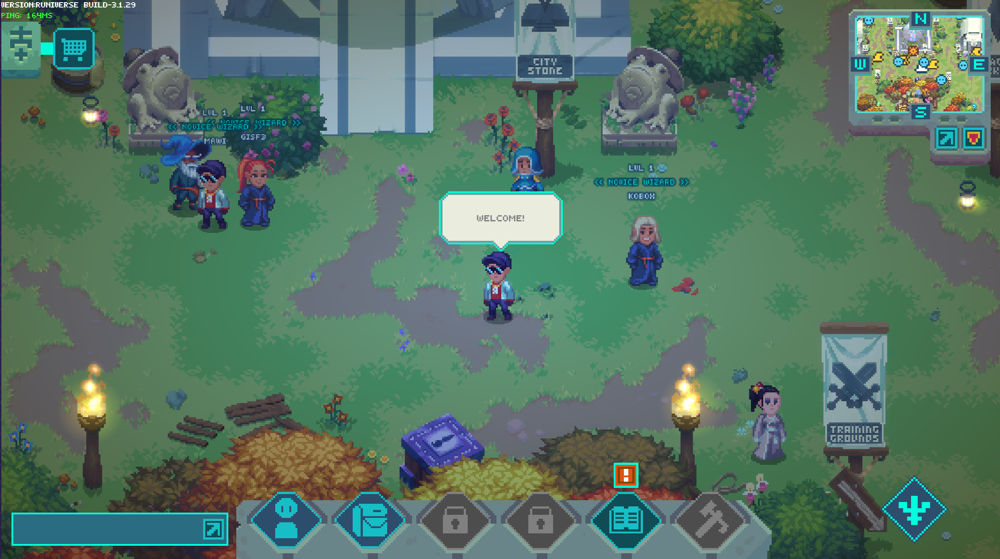
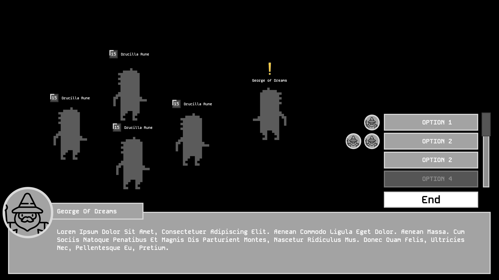
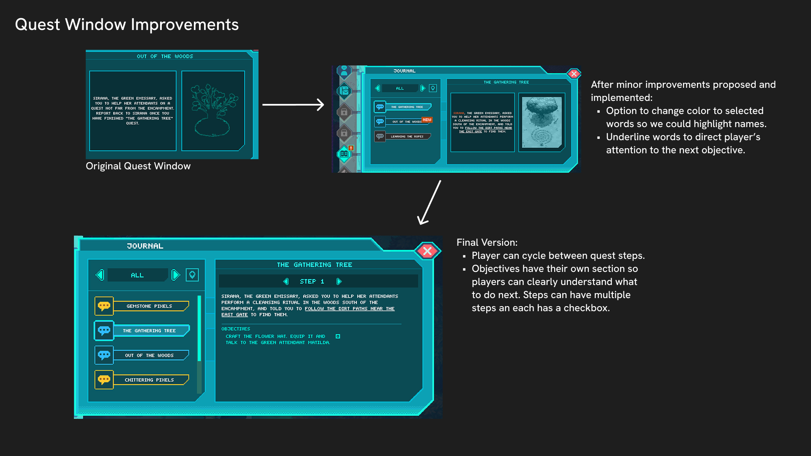
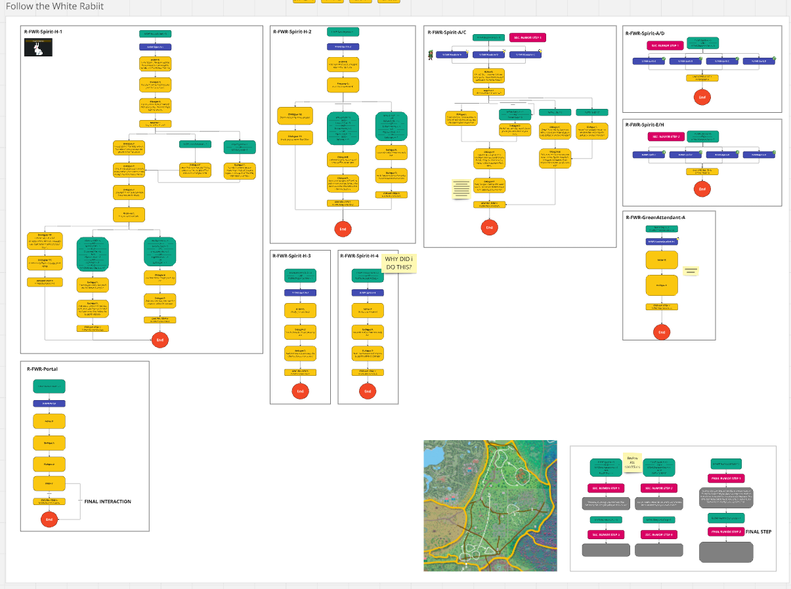

Forgotten Runiverse
“Now, go southwest, find that mine, and show my former assistant exactly who the real boss is.”
Forgotten Runiverse is an open-world MMORPG set in a fantasy universe tied to the Forgotten Runes IP. Players explore, complete quests, and interact with a community-driven world. The game blends traditional MMO mechanics with Web3 elements.
My contributions
As Quest Designer, I owned the complete quest development pipeline from concept to release.
- Designed and implemented 15+ open world quests end-to-end, and collaborated on more, from initial pitch through in-engine execution
- Created interaction flows, state machines, and trigger logic for all quest content
- Wrote base dialogue establishing flow, tone, and character personalities (final polish by narrative designer)
- Conducted FTUE analysis to identify and resolve player friction points in the early game
- Developed and implemented a new narrative design process that improved team efficiency and cross-discipline consistency
- Playtested and iterated on quests based on player feedback
The context
I joined Bisonic to focus specifically on quest design, something I'd been doing informally in previous roles but wanted to own fully. This was my first time working on an MMORPG and my first experience with Web3 game development. What stood out was the team's commitment to making Forgotten Runiverse a real game first, with Web3 elements supporting rather than defining the experience.
The role gave me full ownership of a content vertical. I pitched quest concepts, documented designs, built them in-engine, and iterated based on feedback. Working with a smaller team meant wearing multiple hats, so I also contributed to narrative design process improvements and FTUE analysis beyond my core quest work.
The quests I designed were live and playable until the game was retired in 2026. Several community members recorded walkthrough videos of the content, linked below.
Images
assets/img/forgotten-runiverse-1.png
assets/img/forgotten-runiverse-2.png
assets/img/forgotten-runiverse-4.jpg
assets/img/forgotten-runiverse-5.png
assets/img/forgotten-runiverse-3.jpgCommunity walkthroughs
Recorded by players while the game was live. They are not my videos, and if a link stops working the notes above still describe the work.
“Working with Santiago was a delight. He made small quests into adventures and took on whatever challenge came his way, from designing interesting storylines with limited resources to standardizing work practices across the project.”